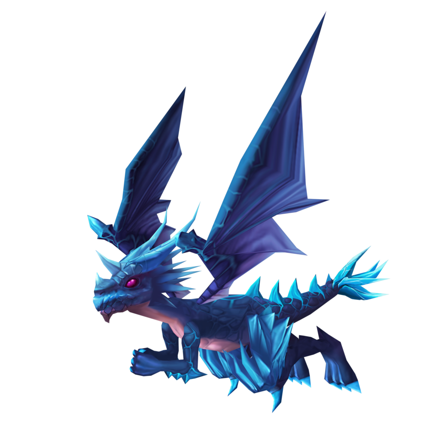
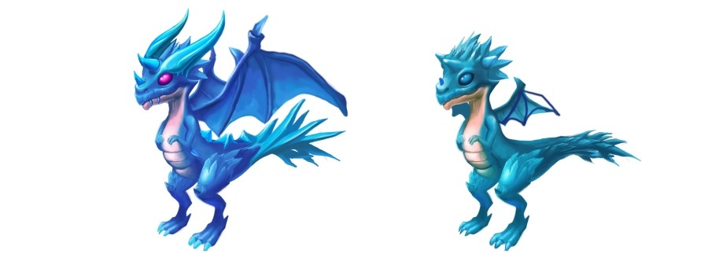
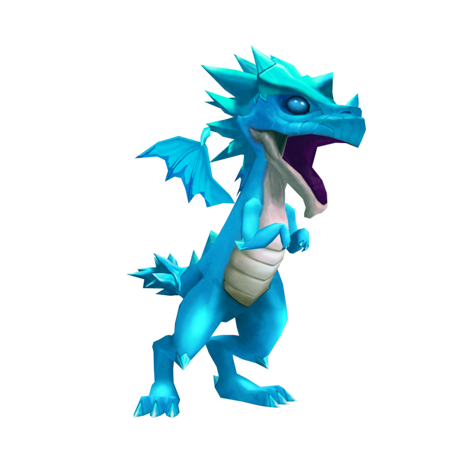
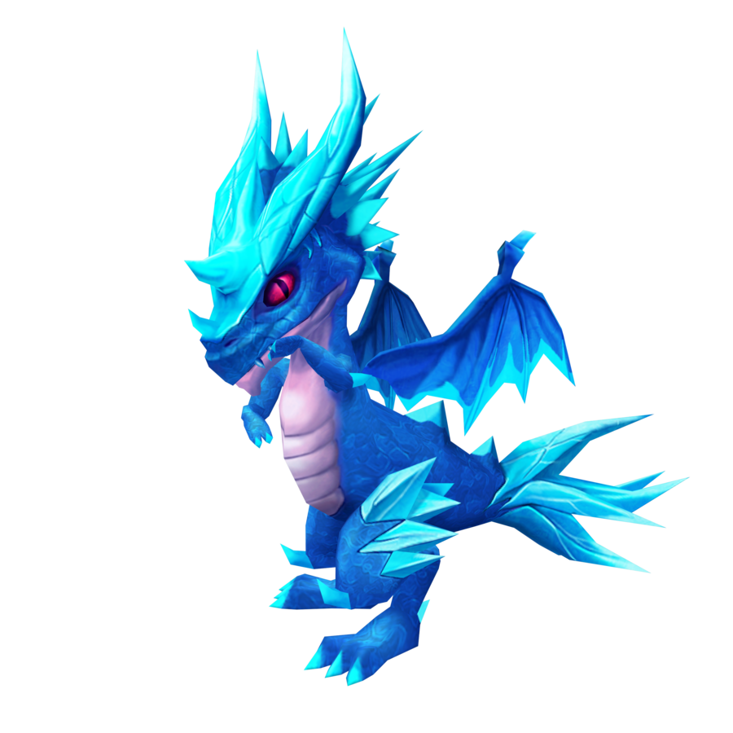

소울택틱스
모바일용 진화형 로우폴리 캐릭터


프로젝트 소개
모바일 전략 게임의 캐릭터 콘셉트와 진화 단계를 만들고 모델링부터 모션까지 제작했습니다.
담당 업무
- 진화형 유닛 콘셉트 디자인·모델링·텍스처
- 리깅·애니메이션 제작
기여 범위 및 사용 리소스
- 이미지는 본문에서 콘셉트 및 모델링 결과로 구분됨.
- 와이어·UV 및 리깅·모션 원본 미확인.
기술 및 툴
확인된 제작 정보
- 유닛 1개 제작
Gallery
드래곤의 성장 단계
날개와 등 가시, 체형의 변화로 성장 단계별 실루엣을 구분했습니다.





